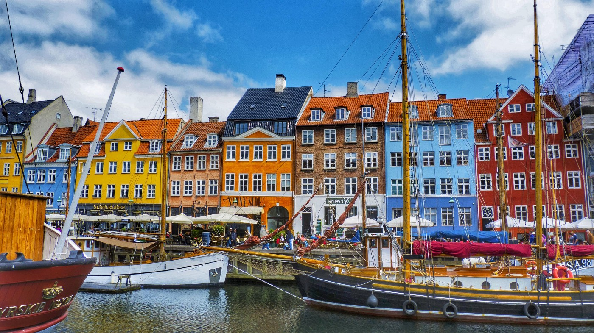
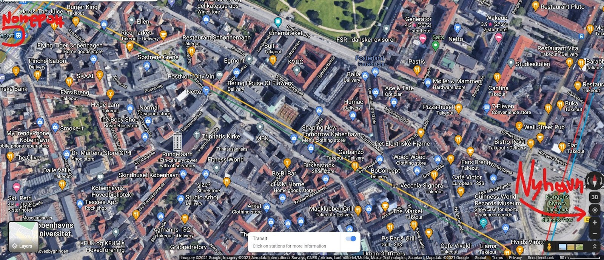

Things to do in Copenhagen
Guide for visiting Copenhagen.

Are you visiting Copenhagen anytime soon? If yes, keep reading as you will find some related info and suggestions that might help you plan your visit! As an exchange student in Denmark back in 2018, I had enough time to explore it. While you might be for a few days there, this can help you allocate your time efficiently during your visit.
CURRENCY
The main currency is Danish Krone. Live currency converter. However, they accept card payments everywhere. With Revolut or Venmo you should be fine.
TRANSPORTATION
- The Metro is convenient and it takes you everywhere you want to go within the city:
Rejseplanen app - This is the app for the metro/train. It is designed specifically for them and it works like Google maps. Great navigation tool while you are in Denmark. There will be machines (also a person for support) at the airport where you can buy tickets. Also, Denmark is infamous for cycling with great infrastructure. You can rent bikes as well and ride across the city.
COOL VISITS
Nyhavn (The most iconic part of Copenhagen. Highly recommended. the Closest metro station: Kongens Nytorv station.)

Something you can do is to walk through the shopping center of Copenhagen. You can go to Norreport station and walk towards Nyhavn. It is like a 1 to 1.5 mile (1.6–2.4km) walk. There are many stores and restaurants in between (along the yellow line on the map). While it is not a straightforward walk it is a pleasant one as you are passing through the shopping area of the city.
- Rosenborg Castle & Botanical Garden (Nice places to walk around. Also, Rosenborg castle is a historic place that now operates as a museum ticket info. Have no opinion for the museum though as I haven’t been. Closest metro station: Norreport station)
- Little Mermaid (You will often see it in souvenir shops as it is considered as one of the main attraction points in Copenhagen along Nyhavn. While you might not be impressed by it due to its tiny size, you may want to see it simply for its touristic outreach.) Osterport Station.
- Amalienborg (The equivalent ‘Buckingham palace’ of Denmark. Cool for walking around and taking pictures with the royal guards. Have no opinion for the museum there though as I haven’t been. tick info)
- Carlsberg Factory (if you like beer this is a nice place to visit. There is a tour in the factory and some beer tasting in the end. Carlsberg Station.)
- Tivoli Gardens/Park (Located in front of the Central Station. The most famous park in Copenhagen. Kobenhavn H station)
- Fisketorvet (If you like Malls, this can be an option. Most famous mall in the city.)
- Black Diamond (The largest library in Denmark. It is a modern building. A Nice place to visit. Christianshavn station.)
COOL NEIGHBOURHOODS
- Freetown Christiania (It is considered an independent town within Copenhagen where people go there to chillax. It is a renowned marijuana place since Christiania is the only part of Copenhagen where Danish law is not enforced. However, it is a safe area that is worth a visit mainly due to its particularity. Highly recommended.) Metro station: Christianshavn.
- Beautiful Parks (especially for summer walks):
- Frederiksberg Have (One of the most beautiful parks in Copenhagen) Frederiksberg station.
- Superkilen Park (Norrebro station). Fun fact, Norrebro is an area where many immigrants stay. Diverse area.
- Vestre Kirkegard (near Carlsberg factory) Metro: Carlsberg Station
FOOD & COOL PLACES (min $ /max $$$$)
- Union Kitchen $$ (Cool place for brunch. Heard great things from friends that have been there.)
- Sticks’n’Sushi $$$ (Great sushi place. Known rooftop restaurant in the city.)
- Dalle Valle $ (variety food buffet - alue for money place with plenty of food) Not fast food, but not a high-class restaurant. Almost always lots of people, decent food, a variety of options. Recommended for lunch.
- Conditori La Glace $$$ (Traditional Danish pastries, it is the oldest patisserie in Denmark - founded in 1870, good for dessert)
- Espresso House $$ (coffee place, despite its Swedish origin it is considered as the ‘Starbucks’ of Denmark)
- Bastard cafe $$ (a place full of board games. A nice place to go with friends for coffee/snacks/beer and board games.
- Taphouse $$ (Famous bar in the city. If you like beer then this is the place for you. It has one of the largest beer selections in Europe.)
You can always map your choices and combine visits that are close to each other. Also, since it is Scandinavia, remember to check the weather while preparing your bags! You are visiting arguably the most beautiful city in Scandinavia so try to enjoy every minute of it!
Have fun and safe travels!